Part 0: Setup
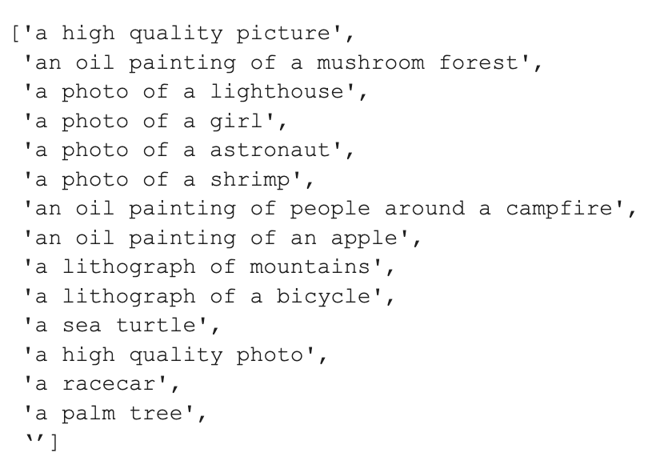
These are the prompts in my dictionary. Below are the generated images using random seed = 17:
Sea Turtle, Lighthouse, and Mushroom Forest (5 steps)
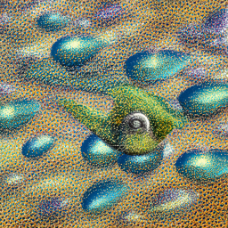
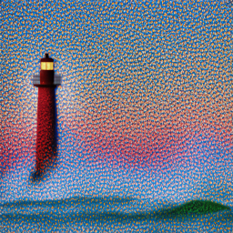
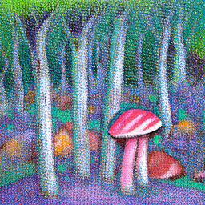
Sea Turtle, Lighthouse, and Mushroom Forest (20 steps)
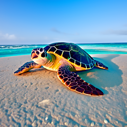
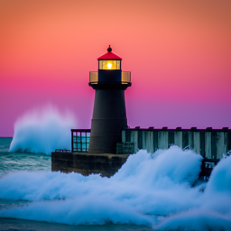
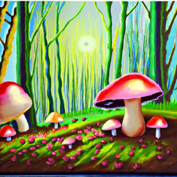
Sea Turtle, Lighthouse, and Mushroom Forest (50 steps)
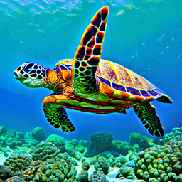
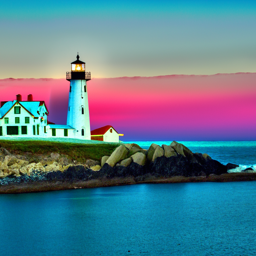
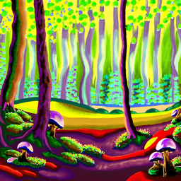
As observed, the output quality is better when there are more inference steps. At just 5 steps, the images appear grainy and it is difficult to distinguish the sea turtle. At 50 steps, the images are very well defined.
Part 1.1: Implementing the Forward Process
After implementing the noisy_im = forward(im,t) function, the Campanile at noise levels 250,500,750 are shown:
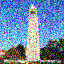
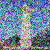
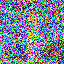
Part 1.2: Classical Denoising
Using Gaussian blur filtering to remove the noise did not produce desireable results. The Gaussian-denoised versions are below:
Part 1.3: One-Step Denoising
Original Image:

Noisy images:
Estimate of original images:
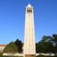
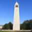
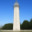
Part 1.4: One-Step Denoising
Noisy Campanile every 5th loop of denoising:
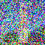
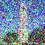
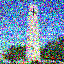
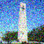
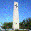
Iteratively Denoised Image, One step results and Gaussian blur:
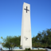
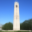
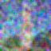
Part 1.5: Diffusion Model Sampling
5 sampled images (not great quality):
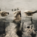
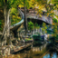
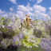
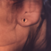
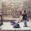
Part 1.6: Classifier-Free Guidance (CFG)
After implementing the iterative_denoise_cfg function, here are 5 better images:
Part 1.7: Image-to-image Translation
Series of edits that gradually match the original Campanile image:
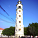
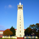
Applying this to 2 of my own images:
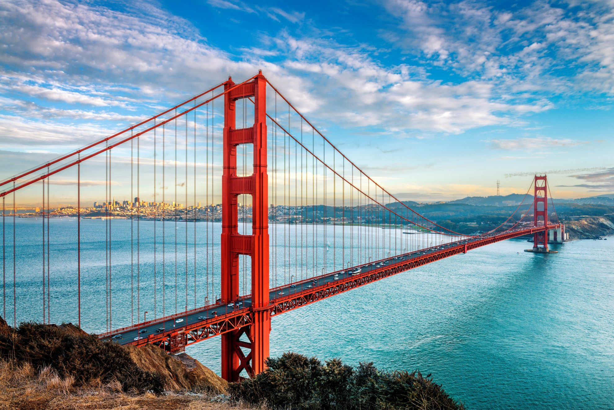

Golden Gate Bridge with starting index of [1, 3, 5, 7, 10, 20] steps
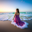
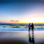
Trevi Fountain with starting index of [1, 3, 5, 7, 10, 20] steps
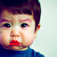
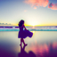
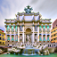
Part 1.7.1: Editing Hand-Drawn and Web Images
Edited Web Image:
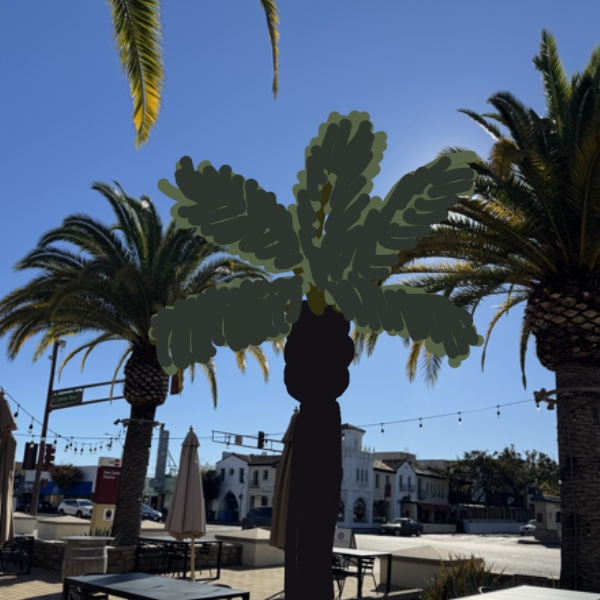
Iterative steps [1,3,5,7,10,20]:
Edited Hand-Drawn Images:
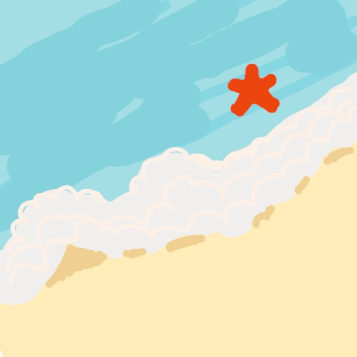
Iterative steps [1,3,5,7,10,20]:
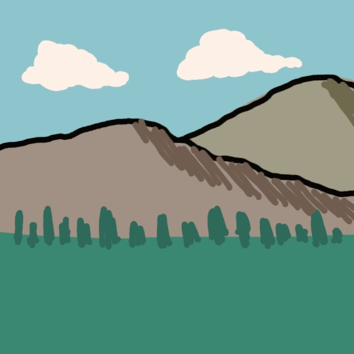
Iterative steps [1,3,5,7,10,20]:
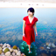
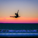
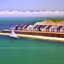
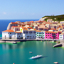
Part 1.7.2: Inpainting
After implementing the inpaint function, below is the Campanile inpainted, with the top masked off:
For my own images, I masked away the sky in the beach photo and one half of the apple.
Here are the results:
Part 1.7.3: Text-Conditional Image-to-image Translation
Turning a sea turtle into the Campanile:
Turning a mushroom forest into a beach:
Turning a shrimp into an apple:
Part 1.8: Visual Anagrams
After impleementing visual_anagrams function, the below 2 illusions are produced after multiple tries:
Lighthouse and mountain
People around a campfire and mushroom forest
Part 1.9: Hybrid Images
After implementing make_hybrids function, 2 hybrid images were created:
From close: Mountain. From afar: Bicycle.
From close: People around a campfire. From afar: Racecar.